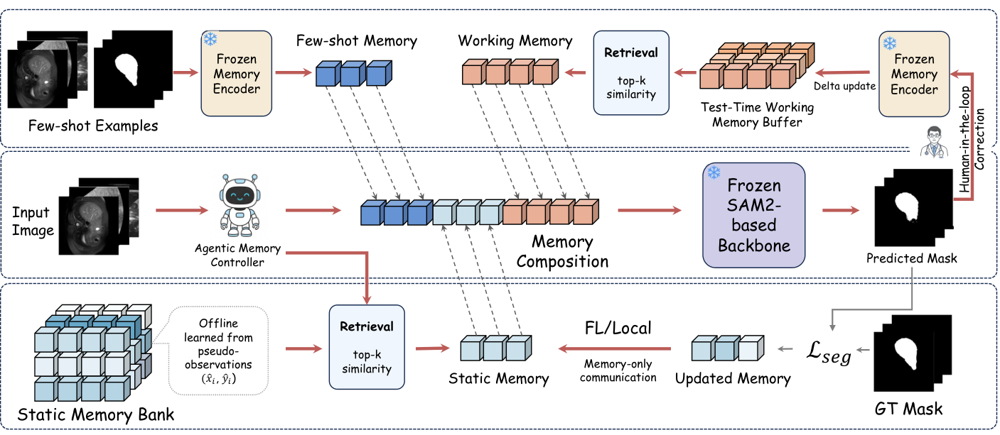
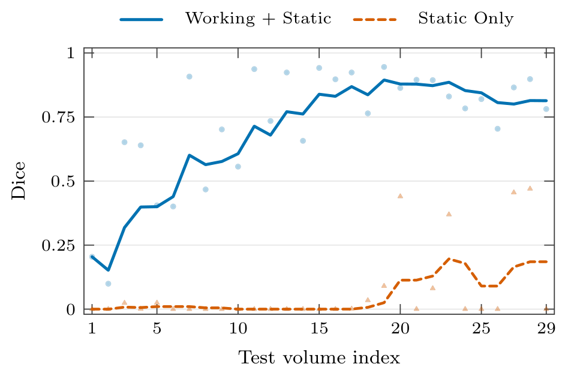
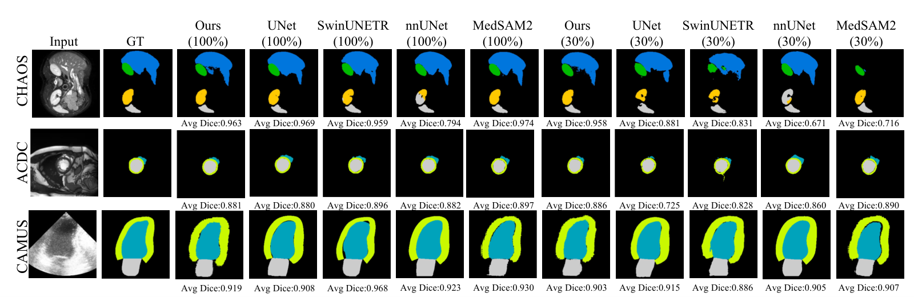
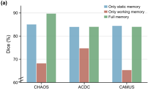
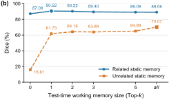
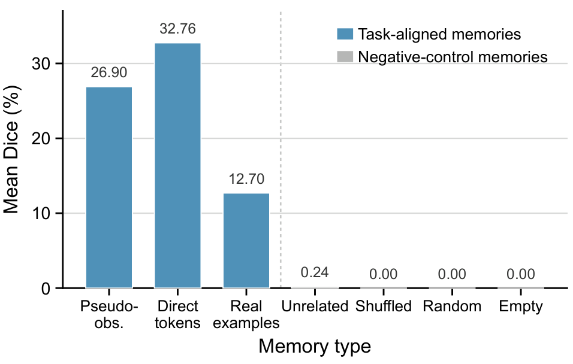

Static memory
We learn task-specific pseudo-image and pseudo-mask prototypes through the frozen observation-to-memory pathway. These memories provide a persistent supervised prior.
Supervised constructionMemSeg-Agent
A Unified Framework for Medical Image Segmentation
We turn task knowledge and deployment experience into reusable memory. One frozen foundation model supports supervised learning, few-shot inference, feedback-driven adaptation, and federated collaboration.
Author affiliations and paper detailsTHE IDEA
New scanners, institutions, and patient populations bring new segmentation challenges. We represent adaptation knowledge in an explicit memory state that can grow and change throughout deployment.
Our static, few-shot, and working memories share the native SAM2 memory interface. A read–write controller retrieves relevant experience, composes it with stable task priors, and consolidates new feedback while the backbone stays fixed.
Explore the methodologyMETHOD
Our default backbone is SAM2.1 Hiera-Tiny. We also evaluate static memory with frozen MedSAM2.

We learn task-specific pseudo-image and pseudo-mask prototypes through the frozen observation-to-memory pathway. These memories provide a persistent supervised prior.
Supervised constructionWe encode labeled support examples into reusable memories. Similarity-based retrieval selects relevant examples without additional optimization.
Support-based inferenceWe encode corrected image–mask pairs after prediction. New observations expand memory; similar observations update an existing entry through delta consolidation.
Feedback-driven adaptationFrozen DINOv3 features rank few-shot and working memories by cosine similarity. The controller combines retrieved entries with static memory, then appends or consolidates corrections for future cases.
Our retrospective experiments simulate clinician corrections with ground truth when Dice < 0.5. Corrections cannot improve the score of the same case. Memory novelty uses a similarity threshold of 0.95. Read–write policy
CROSS-DOMAIN RESULTS
Train on CAMUS. Adapt on CardiacUDA.
Volume-level evaluation, averaged over LV and LA.
MemSeg-Agent with working memory
Our external cohort contains 8 patient volumes and 428 annotated frames. Working memory uses the feedback protocol described above. Table 2 reports source-domain and target-domain Dice.
Source and target results · Table 2Target domain · Dice (%) · Higher is better
| Method | CAMUS | CardiacUDA | Change (pp) |
|---|---|---|---|
| UnCLeSAM | 82.21 | 15.57 | −66.63 |
| Lifelong nnU-Net | 92.64 | 19.90 | −72.74 |
| MemSeg-Agent (Static-only) | 90.45 | 19.79 | −70.66 |
| MemSeg-Agent | 90.45 | 77.93 | −12.52 |
WORKING-MEMORY CONSOLIDATION
Delta updates preserve comparable segmentation performance with fewer stored entries.
Both append-only storage and delta consolidation improve sequential CAMUS-to-CardiacUDA adaptation. Our delta controller merges a correction into its closest memory when the two are sufficiently similar.
Across the two class-specific banks, this is 143 → 62 entries: 56.6% fewer, calculated from Table 3.

| Method | LV | LA | Subsequent Dice | Final entries | |||
|---|---|---|---|---|---|---|---|
| Dice ↑ | HD95 ↓ | Dice ↑ | HD95 ↓ | LV ↑ | LA ↑ | ||
| Static only | 31.16 | 47.91 | 8.42 | 40.13 | 33.06 | 4.79 | 0 / 0 |
| Static + Append | 83.10 | 11.54 | 73.38 | 6.86 | 82.22 | 69.30 | 29 / 114 |
| Static + Delta | 82.41 | 11.74 | 73.45 | 8.07 | 81.12 | 69.73 | 22 / 40 |
Table 2 reports the main cross-method comparison; Table 3 separately evaluates append-only and delta memory policies. Memory-policy results
SUPERVISED SEGMENTATION
Three datasets. Three annotation budgets. Two frozen SAM2-family backbones.
Our static memory achieves competitive segmentation under 100%, 30%, and 10% supervision. Explore the per-structure Dice and HD95 results, including our four-site federated setting at full supervision.
| Method | Left kidney | Right kidney | Spleen | Liver | ||||
|---|---|---|---|---|---|---|---|---|
| Dice ↑ | HD95 ↓ | Dice ↑ | HD95 ↓ | Dice ↑ | HD95 ↓ | Dice ↑ | HD95 ↓ | |
| U-Net | 76.67 | 43.42 | 71.37 | 90.12 | 67.91 | 35.03 | 87.35 | 13.37 |
| SwinUNETR | 75.34 | 94.75 | 80.98 | 124.78 | 72.32 | 111.60 | 83.15 | 54.21 |
| nnU-Net | 89.15 | 14.57 | 84.91 | 15.73 | 82.82 | 11.36 | 89.26 | 10.76 |
| MedSAM2 (full fine-tuning) | 85.42 | 23.05 | 87.49 | 18.90 | 77.45 | 37.08 | 88.65 | 15.62 |
| Ours · Static (MedSAM2) | 87.02 | 4.41 | 84.91 | 4.71 | 82.03 | 9.74 | 82.03 | 7.86 |
| Ours · Static (SAM2) | 92.99 | 3.76 | 94.10 | 2.32 | 88.59 | 1.95 | 90.21 | 3.40 |
| Ours · Static (SAM2) · FL | 92.08 | 3.20 | 93.14 | 1.25 | 90.27 | 2.60 | 91.71 | 2.93 |

FEDERATED LEARNING
Task-specific memory exchange with a shared, frozen foundation model.
In our four-site FedAvg experiment, clients optimize static-memory variables locally and the server aggregates them. Images and annotations stay at each site. Our Static Memory (SAM2) – FL results remain competitive across CHAOS, ACDC, and CAMUS.
Our paper reports a 74.3× communication reduction for compact memory exchange. The payload comparison below distinguishes the encoded memory representation from the learnable pseudo-observations used to construct it.
Task-specific memory in the frozen backbone’s memory space.
74.3× smaller payloadA 3-channel pseudo-image and 1-channel mask-logit map at 1024 × 1024: 4,194,304 FP32 values.
9.3× smaller payload38,962,498 model parameters transmitted in FP32 for full-model communication.
Full-model reference payloadSizes are uncompressed FP32 payloads per client, per one-way transmission; 1 MiB = 2²⁰ bytes. Memory size is not a count of trainable parameters. Directly exchanging pseudo-observation variables has the 16 MiB payload shown above; the 74.3× ratio applies to the 2 MiB encoded-memory comparison. An upload plus a download doubles each payload. We exclude protocol overhead, optimizer state, and one-time backbone distribution.
ABLATION STUDIES
Task relevance, complementary memory sources, and the amount of retrieved experience.


Our memory-validity study compares pseudo-observations, direct tokens, and real examples with unrelated, shuffled, random, and empty memories. Task-aligned representations produce meaningful predictions; the negative controls yield near-zero Dice.
Direct tokens achieve the highest Dice in this study. Pseudo-observations preserve the common observation-to-memory pathway used throughout our framework.
Memory-validity analysis
EXPERIMENTAL DATA
Cardiac MRI
100 patientsRV · Myocardium · LVEchocardiography
500 patientsLV · Myocardium · LAAbdominal MRI
20 patients usedKidneys · Spleen · LiverEchocardiography
8 patient volumesLV · LA · 428 framesCHAOS MRI has 40 subjects overall; we use the 20-subject labeled subset. The CardiacUDA cohort includes all usable volumes in the public labe_all_frame subset after excluding undocumented label codes. It is a fixed external cohort, not the complete official test partition, and is excluded from training and validation. We predict slice-wise and evaluate reconstructed volumes. Dataset protocol · Data access and preparation
OPEN SOURCE
Explore our memory implementations and tools for interactive segmentation.
Datasets and pretrained weights are obtained separately. The repository documents configuration, experiment settings, and current reproduction limits.
git clone https://github.com/b0wenchen/MemSeg-Agent.git
cd MemSeg-Agent
# Install a CUDA-compatible PyTorch build first.
pip install -r requirements.txt
# Configure data and checkpoint paths before running.
python scripts/train_static.py --config configs/default.yamlCITATION
Please cite our paper and the original backbone and dataset sources.
arXiv:2603.05873v2@article{chen2026memsegagent,
title={From Weight-Space to Memory-Space Adaptation:
A Unified Framework for Medical Image Segmentation},
author={Chen, Bowen and Gao, Qiaohui and Wan, Shaowen and
Yan, Ruiyu and Sun, Shanhui and Liu, Wei and Li, Xiang and
Liu, Tianming and Zhao, Lin},
journal={arXiv preprint arXiv:2603.05873},
year={2026},
url={https://arxiv.org/abs/2603.05873v2}
}ACKNOWLEDGEMENTS
We gratefully acknowledge NVIDIA for supporting our research on MemSeg-Agent.